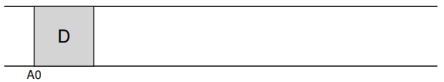
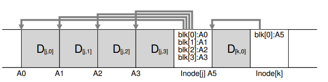
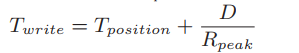
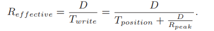
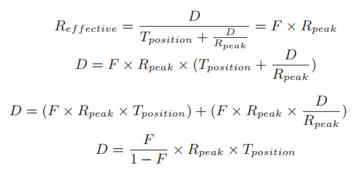
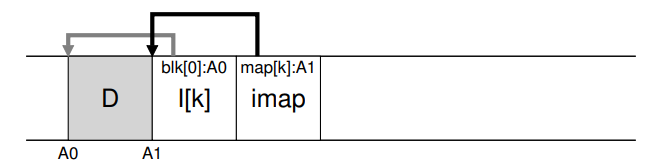
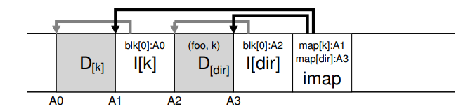
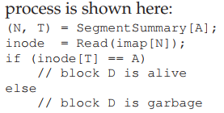

Background:
- System merories are growing
- There is a large gap between random I/O performance and sequential I/O performance
- Existing file systems perform poorly on many common workloads
- File systems are not RAID-aware
LFS
- first buffer all updates (inlcuding metadata) in an in memory
segment, - when segment is full, it is written to disk in one long, sequential transfer to an unused part of disk
LFS never overwrite existing data, but rather always writes segments to free locations. Because segments are large, the disk is used efficiently, and performance of the file system approaches its zenith.
Writing To Disk Sequentially
Imagine we are writing a data block D to a file. Writing the data block to disk might result in the following on-disk layout, with D written at disk address A0:

it is not only data that gets written to disk; there is also other metadata that needs to be updated. In this case, let’s also write the inode (I) of the file to disk, and have it point to the data block D. When written to disk, the data block and inode would look something like this (note that the inode looks as big as the data block, which generally isn’t the case; in most systems, data blocks are 4 KB in size, whereas an inode is much smaller, around 128 bytes):
This basic idea, of simply writing all updates (such as data blocks, inodes, etc.) to the disk sequentially, sits at the heart of LFS.
保证顺序写不足够保证 throughput，因为对于 HDD，如果每次写的数据块之间间隔过长，磁盘已经转过头了，就必须等待下一次经过时候。所以为了保证HDD的 throughput，必须 , you must issue a large number of contiguous writes (or one large write) to the drive in order to achieve good write performance.
write buffering 应运而生。
LFS buffer all updates and when reach to limit, write the whole segment to disk at once.
Here is an example, in which LFS buffers two sets of updates into a small segment; actual segments are larger (a few MB). The first update is of four block writes to file j; the second is one block being added to file k. LFS then commits the entire segment of seven blocks to disk at once. The resulting on-disk layout of these blocks is as follows:

How Much To Buffer?
- assume that positioning before each write takes roughly
Tpositionseconds - disk transfer rate is
RpeakMB/s
let’s assume we are writing out D MB. The time to write out this chunk of data (Twrite) is the positioning time Tposition plus the time to transfer D.

effective rate of writing :

we want the effective rate to be some fraction F of the peak rate, where 0 < F < 1.
In mathematical form, this means we want Reffective = F × Rpeak.

with a disk with a positioning time of 10 milliseconds and peak transfer rate of 100 MB/s; assume we want an effective bandwidth of 90% of peak (F = 0.9). In this case, D = 0.9 0.1 × 100 MB/s × 0.01 seconds = 9 MB
Problem: Finding Inodes
We’ve managed to scatter the inodes all throughout the disk! Worse, we never overwrite in place, and thus the latest version of an inode (i.e., the one we want) keeps moving.
Solution Through Indirection: The Inode Map
LFS introduced a level of indirection between inode numbers and the inodes through a data structure called the inode map (imap).
The imap is a structure that takes an inode number as input and produces the disk address of the most recent version of the inode. Thus, you can imagine it would often be implemented as a simple array, with 4 bytes (a disk pointer) per entry. Any time an inode is written to disk, the imap is updated with its new location.
总结就是有个 inode map 结构存储了最新的 inode 信息，并随之更新。
问题是，inode map 存在哪儿，如果存在一个 fixed 的位置，那么随之而来的问题就是，每次更新文件，就需要重新 seek 到 inode map 位置并更新，这样就和 FFS 没有区别了（更新文件以后更新inode 和 metadata）。
LFS places chunks of the inode map right next to where it is writing all of the other new information. Thus, when appending a data block to a file k, LFS actually writes the new data block, its inode, and a piece of the inode map all together onto the disk, as follows:

In this picture, the piece of the imap array stored in the block marked imap tells LFS that the inode k is at disk address A1; this inode, in turn, tells LFS that its data block D is at address A0.
Completing The Solution: The Checkpoint Region
LFS has a fixed place on disk, known as checkpoint region (CR), checkpioint region contains pointers to the latest pieces of the inode map, so the inode map pieces can be found by reading the CR first. And the CR is only updated periodically, thus performance is not ill-affected.
Reading A File From Disk: A Recap
Assuming there is nothing in memory.
- read checkpoint region to get the entire inode map and cache it in memory
- when given an inode number of a file, LFS looks up the inode-number to inode-disk-address mapping in the imap, read the latest version of the inode.
- after get the inode, read a block like the typical UNIX like system
通常情况，inode map 都是被cache 在内存中的，所以 LFS 读文件的唯一额外操作，就是从 inode map 中读取到 最新 inode 的 address。
What About Directories?
creating a file foo in a directory would lead to the following new structures on disk:

There is one other serious problem in LFS that the inode map solves, known as the recursive update problem.(就是一次文件更新，引起其目录 inode 更新，引发更上层的目录更新，直到 / 目录)
Specifically, whenever an inode is updated, its location on disk changes. If we hadn’t been careful, this would have also entailed an update to the directory that points to this file, which then would have mandated a change to the parent of that directory, and so on, all the way up the file system tree.
LFS cleverly avoids this problem with the inode map. Even though the location of an inode may change, the change is never reflected in the directory itself; rather, the imap structure is updated while the directory holds the same name-to-inumber mapping. Thus, through indirection, LFS avoids the recursive update problem.
A New Problem: Garbage Collection
LFS leaves old versions of file structures scattered throughout the disk. We (rather unceremoniously) call these old versionsgarbage.
, LFS instead keeps only the latest live version of a file; thus (in the background), LFS must periodically find these old dead versions of file data, inodes, and other structures, and clean them; cleaning should thus make blocks on disk free again for use in a subsequent writes. Note that the process of cleaning is a form of garbage collection, a technique that arises in programming languages that automatically free unused memory for programs.
如果 LFS 只是简单的将 old version block 删除，那么就会形成很多零星的 free space，导致以后可能没有整块的 block 可以写入。
Instead, the LFS cleaner works on a segment-by-segment basis, thus clearing up large chunks of space for subsequent writing. The basic cleaning process works as follows:
Periodically, the LFS cleaner reads in a number of old (partially-used) segments, determines which blocks are live within these segments, and then write out a new set of segments with just the live blocks within them, freeing up the old ones for writing
Here arouse two problems:
- how can LFS tell which blocks within a segment are live, and which are dead?
- how often should the cleaner run, and which segments should it pick to clean?
Determining Block Liveness
There is a segment summary block at the head of the segment, includes, for each data block D, its inode number (which file it belongs to) and its offset (which block of the file this is).
- For a block D located on disk at address A, look in the segment summary block and find its
inode number Nandoffset T. - look in the imap to find where N lives and read N from disk (perhaps it is already in memory, which is even better)
- using the
offset T, look in the inode (or some indirect block) to see where the inode thinks the Tth block of this file is on disk.
If it points exactly to disk address A, LFS can conclude that the block D is live. If it points anywhere else, LFS can conclude that D is not in use (i.e., it is dead) and thus know that this version is no longer needed.

也可以在imap里面存储最新数据的 version number，然后和 segment summary block 里面的 version number 对比，如果一致则 live，不一致则是 garbage，减少一次读取。
Which Blocks To Clean, And When?
an approach which tries to segregate hot and cold segments.：
A hot segment is one in which the contents are being frequently over-written; thus, for such a segment, the best policy is to wait a long time before cleaning it, as more and more blocks are getting over-written (in new segments) and thus being freed for use. A cold segment, in contrast, may have a few dead blocks but the rest of its contents are relatively stable. Thus, the authors conclude that one should clean cold segments sooner and hot segments later
Crash Recovery And The Log
crash in writing to a segment, writing to the CR:
- 因为会周期性的更新 CR，如果某次一旦crash，下次恢复的就是恢复老的 version，但是最新的数据会丢失。为了尽可能多恢复数据，使用
roll forward技术，首先根据 CR 找到上个有效的 version 处，然后往后扫描一个 segment，看是否有 valid 数据在里面，然后恢复。 - 有两个 CR，在更新CR 的 时候，先在CR 的header数据中写入一个 timestamp，然后接着写 body，然后写 last block with timestamp，如果两个 timestamp 不匹配，则丢弃；每次都选取有效的，并且时间戳最近的那个 CR 恢复
Summary
WAFL, ZFS, btrfs,都是 LFS